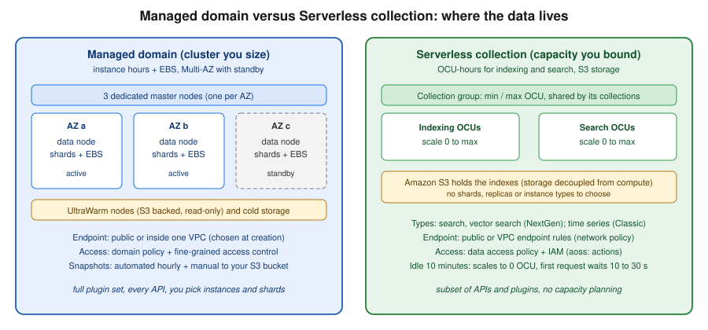

OpenSearch and Search on AWS
|
This content was generated with the assistance of AI and should be verified against the official documentation before being relied on in production. See the section bibliography for the reference material consulted while preparing these pages. |
Commands and behaviour below are current for AWS CLI v2 (2.37 line), the opensearch, opensearchserverless and osis
command groups, the OpenSearch Java client 3.x and the AWS SDK for Java 2.x, checked 2026-10-01. The managed service
supports OpenSearch 1.x, 2.x and 3.x (3.5 is the newest version listed) and legacy Elasticsearch up to 7.10; the
next-generation OpenSearch Serverless became generally available in May 2026. Search is a fast-moving area, so confirm
flags with aws opensearch help and the linked reference pages before relying on them in automation. Region
us-east-1 and the account ID 111122223333 are placeholders throughout.
Search is the one Bookshelf feature that a relational database does badly: the catalog-api needs typo-tolerant
full-text search over book titles, authors and descriptions, faceted filters (genre, language, price range), and a
"books like this" semantic query. This page puts that on Amazon OpenSearch Service, first as a managed domain (a
cluster you size) and then as an OpenSearch Serverless collection (capacity AWS scales for you), and also covers the
alternative of running real Elasticsearch through Elastic Cloud on AWS. The engine itself (the query DSL, mappings,
analyzers, aggregations, ingest pipelines) is documented in the Elasticsearch
reference; OpenSearch is a fork of Elasticsearch 7.10 and most of that material applies, with the divergences
noted in Lucene vs. Solr vs. Elasticsearch vs. OpenSearch. This page is about running it on
AWS: creating it, securing it, connecting to it, feeding it, backing it up and paying for it. Where Bookshelf’s other
databases sit is in Managed Databases on AWS, and the Azure counterpart of this page is the
search coverage in Managed Databases on Azure.

The options at a glance
| Option | What it is | When to pick it |
|---|---|---|
OpenSearch Service domain |
A managed OpenSearch (or legacy Elasticsearch OSS) cluster. You choose the engine version, instance types, node counts, storage, Availability Zones and network placement. AWS patches, replaces failed nodes, snapshots and monitors. |
You want every OpenSearch API and plugin, predictable latency, tiered storage (UltraWarm, cold), or a workload large and steady enough that reserved capacity is cheaper than pay-per-use. |
OpenSearch Serverless |
Collections of indexes on a cloud-native architecture where indexing and search compute scale independently and Amazon S3 is the primary storage. Capacity is measured in OpenSearch Compute Units (OCUs). Two generations exist: NextGen (search and vector search collections, collection groups, scale to zero) and Classic (also time series collections, account-level capacity settings). |
Spiky, unpredictable or idle-most-of-the-day workloads, development environments, and teams that do not want to size shards and instances. Accept a smaller API and plugin surface. |
Elastic Cloud on AWS |
Elastic’s own managed service (Elasticsearch, Kibana, Elastic’s current features and licence), sold through AWS Marketplace and deployed in AWS Regions, with AWS PrivateLink connectivity. |
You need real Elasticsearch (recent versions, Elastic’s piped query language, Elastic’s own vector and relevance features, Kibana apps) rather than the OpenSearch fork. |
Self-managed on EC2 or EKS |
Elasticsearch, OpenSearch or Solr that you run yourself (an operator or Helm chart on EKS, or instances from EC2). |
You need Solr, a specific version or plugin the managed services do not offer, or full control. You own upgrades, backups, shard balancing and security. |
Two clarifications that older guides get wrong. First, the service formerly called Amazon Elasticsearch Service was
renamed Amazon OpenSearch Service in 2021, and it does not run Elasticsearch after 7.10; if a tutorial says "Amazon
Elasticsearch", read "OpenSearch Service" and expect the REST API and the es: IAM action prefix to be unchanged.
Second, the whole opensearch CLI group replaced the older es group; the old aws es commands are still accepted
but are no longer where new features land.
Choosing between them
or Solr?"} B -- "Elasticsearch" --> C["Elastic Cloud on AWS
(or ECK on EKS)"] B -- "Solr" --> D["Self-managed on EKS or EC2,
or move to OpenSearch"] B -- "No, OpenSearch is fine" --> E{"Is load steady and large,
or do you need tiered storage
and every plugin?"} E -- "Yes" --> F["OpenSearch Service domain
Multi-AZ with Standby"] E -- "No: spiky, idle often,
or no capacity planning" --> G{"Search or vector search
only, no time series?"} G -- "Yes" --> H["OpenSearch Serverless
NextGen collection"] G -- "No: log analytics" --> I["Serverless Classic time series
or a domain with UltraWarm"]
Bookshelf starts on a Serverless NextGen search collection for development (it scales to zero overnight) and uses a three-AZ domain in production, because the catalog search is a steady daily load and the team wants the full plugin and API set.
Concepts
Domains
A domain is synonymous with an OpenSearch cluster: the settings, instance types, instance counts and storage you specify. Each EC2 instance is a node. The pieces that matter:
-
Data nodes hold the shards and serve indexing and search. Instance types carry a
.searchsuffix, for exampler7g.large.search; Graviton families are generally cheaper per unit of work, and the OpenSearch Optimized families (or1,or2,om2,oi2) store segments in Amazon S3 for cost-efficient indexing-heavy workloads. -
Dedicated master (cluster manager) nodes only manage cluster state. Production domains use three, spread across three Availability Zones even when the data nodes use two.
-
Dedicated coordinator nodes (optional) take over request fan-out from the data nodes, which also reduces the number of IP addresses a VPC domain reserves.
-
UltraWarm and cold storage keep rarely queried, read-only indexes in Amazon S3 behind a cache (see Tiered storage: UltraWarm and cold).
-
A domain supports up to 1,002 data nodes and 25 PB of attached storage; shard and node limits are on the quotas page in the references.
Multi-AZ with Standby
For production, the recommended deployment option is Multi-AZ with Standby: the domain spans three Availability
Zones, with three dedicated master nodes and a multiple of three data nodes, at least two replicas per index, and one
zone acting as standby (its nodes do not serve searches until a failure, when AWS activates them in under a minute
without moving data). It offers a 99.99% availability design, is available at no extra cost, and needs OpenSearch 1.3
or later, a Region with at least three AZs, and a supported instance family (for example m5, r6g, r7g, c7g,
i3, or1, or2, om2, oi2) with gp3, provisioned IOPS or instance storage. Standby enforces limits of 1,000
shards per node, 75,000 per cluster and 65 GB per shard. Without standby you can choose any number of zones, nodes and
replicas for a 99.9% design; three zones and a node count that is a multiple of three is still recommended.
Serverless collections, collection groups and OCUs
A collection is a group of indexes that supports one workload. There is no cluster to size: OpenSearch Serverless separates the indexing (ingest) components from the search (query) components and stores indexes in Amazon S3, so the two scale independently of each other and of the data volume. Compute is measured in OCUs, each a combination of 6 GiB of memory and corresponding vCPU, provisioned separately for indexing and for search. You never choose shard counts, replicas or the refresh interval (about 10 seconds for search collections); the service handles them.
In the NextGen generation every collection belongs to a collection group. The group owns the capacity: you set a minimum and maximum OCU separately for indexing and search, collections in the group pool that capacity (even when they use different KMS keys), and the maximum is your budget guard rail. A group can reach 1,700 OCUs per side, and capacity values are 2, 4, 8, 16 or a multiple of 16. NextGen groups default to a minimum of 0 OCU, which gives scale to zero: after 10 minutes with no requests to any collection in the group, compute drops to zero and billing for it stops; the next request to each component waits roughly 10 to 30 seconds while workers are restored. Set a non-zero minimum to opt out of that cold start. Classic collections have no groups; capacity is an account-level setting.
The collection type is fixed at creation:
| Type | Notes |
|---|---|
Search |
Full-text search for applications. All data on hot storage. Supports custom document IDs and upserts. No k-NN fields. |
Vector search |
Semantic search on embeddings ( |
Time series |
Log analytics: recent data hot, older data warm. Classic only; no custom document IDs or upserts. |
Limits worth knowing: a collection holds up to 1,000 indexes; Classic collections support up to 10 TiB of managed hot storage; cross-account access to collections and cross-Region replication are not supported; custom plugins and some APIs are unavailable; only automated snapshots are available (no manual snapshots); and there is no automatic migration from a domain, so you reindex. Clients must be compatible with OpenSearch 3.x.
Versions and Extended Support
Versions under standard support get bug fixes and security updates. After standard support ends, a domain keeps running but Extended Support surcharges apply automatically until you upgrade. The published schedule (checked 2026-10-01):
| Software version | End of standard support | End of Extended Support |
|---|---|---|
Elasticsearch 1.5, 2.3, 5.1 to 5.5, 6.0 to 6.7, 7.1 to 7.8; OpenSearch 1.0 to 1.2, 2.3 to 2.9 |
2025-11-07 |
2027-11-07 (extended from 2026-11-07) |
Elasticsearch 5.6 |
2025-11-07 |
2028-11-07 |
Elasticsearch 6.8, 7.10; OpenSearch 1.3, 2.19 |
2027-11-07 |
2030-11-07 |
Elasticsearch 7.9 |
2027-11-07 |
2028-11-07 |
OpenSearch 2.11 to 2.17 |
2027-11-07 |
2028-11-07 |
OpenSearch 3.1 and later |
not announced |
not applicable |
During the extension period for the older versions the surcharge equals your instance cost; for the later group it is a flat fee per Normalized Instance Hour, on top of the instance price. Storage is not surcharged. Check the pricing page for current rates. The practical rule: run the newest OpenSearch version your clients support, and treat a domain still on Elasticsearch 7.10 as a migration item, not a destination. OpenSearch Serverless upgrades itself.
Networking: public versus VPC
You choose the endpoint type when you create a domain, and you cannot change it afterwards: a public domain cannot be moved into a VPC and a VPC domain cannot become public. Migrating means creating a new domain and restoring a snapshot or reindexing.
| Public endpoint | VPC endpoint | |
|---|---|---|
Endpoint form |
|
|
Reachable from |
Any internet-connected client that passes authentication and the access policy |
Only clients that can route into the VPC (peering, Transit Gateway, VPN, Direct Connect, a bastion or proxy) |
Network control |
IP-based access policies |
Security groups (IP-based policies are not allowed) |
Console features |
Full (shard information, Indices tab) |
Reduced (no Indices tab) |
Recommended for |
Quick experiments, Dashboards from anywhere behind strong authentication |
Production, regulated data, anything an application inside AWS calls |
For a VPC domain the service places one elastic network interface per data node in your subnets (one subnet per AZ,
each in a different AZ for Multi-AZ). It reserves three times the per-AZ data node count, rounded up, in IP addresses
per subnet: nine data nodes across three AZs reserve nine addresses per subnet. Give the domain dedicated subnets so
scaling and blue/green deployments never run out of addresses. The VPC must use default tenancy, the domain cannot be
moved to another VPC (you can change subnets and security groups), and the service uses the service-linked role
AWSServiceRoleForAmazonOpenSearchService, which the console creates for you if you hold iam:CreateServiceLinkedRole.
Egress from a VPC domain (for example to a custom endpoint) leaves over the public internet unless you enable the
egress-through-VPC option. Security groups for Bookshelf: the domain’s group allows inbound TCP 443 only from the
catalog-api task security group (see VPC Networking).
For OpenSearch Serverless, access is controlled by a network policy instead of subnets: a collection endpoint (and its
Dashboards endpoint) can be public, or restricted to specific OpenSearch Serverless VPC endpoints
(interface endpoints created with aws opensearchserverless create-vpc-endpoint) that live in your VPC. A policy
can also allow only AWS services such as Bedrock.
Humans reaching a private domain’s Dashboards typically use Client VPN or a bastion tunnel (VPN and Hybrid Connectivity); a lightweight alternative for testing is an SSH or SSM port forward through an instance in the same VPC to port 443 of the domain endpoint. Domains accept only ports 80 and 443.
Access control
Access to a domain is decided in layers, and a request must pass all of them:
-
Network: the endpoint type and, for VPC domains, security groups.
-
Domain access policy (resource-based, JSON): who may call
es:ESHttp*on the domain. Requests from IAM principals must be signed with SigV4 (service namees). -
Fine-grained access control (FGAC): the OpenSearch security plugin, enforcing index-level, document-level and field-level permissions, tenants in Dashboards and audit logs. It requires encryption at rest, node-to-node encryption and HTTPS enforcement, and is enabled when you create the domain (it can be enabled later on a domain that meets the prerequisites, but not disabled).
-
Identity policies on the caller (IAM) allowing
es:ESHttp*and, for management calls,es:CreateDomain,es:DescribeDomainand so on.
Domain access policy
Bookshelf’s catalog-api task role (see ECS and Fargate) gets read and write on the books index and
nothing else. With FGAC enabled the domain policy can be broad while FGAC does the narrowing; without FGAC the domain
policy is the only gate, so keep it tight.
{
"Version": "2012-10-17",
"Statement": [
{
"Sid": "CatalogApiSearchAndWrite",
"Effect": "Allow",
"Principal": {
"AWS": "arn:aws:iam::111122223333:role/bookshelf-catalog-api-task"
},
"Action": [
"es:ESHttpGet",
"es:ESHttpHead",
"es:ESHttpPost",
"es:ESHttpPut"
],
"Resource": "arn:aws:es:us-east-1:111122223333:domain/bookshelf-search/books/*"
}
]
}Derived from Identity and Access Management in Amazon OpenSearch Service.
Never use "Principal": {"AWS": "*"} on a public domain without FGAC; an open policy there means anyone who can
sign a request, or in the worst case anyone at all, can reach the data.
Fine-grained access control
FGAC has an internal user database (usernames and passwords stored in the domain), or you can make an IAM role or user
the master user so there is no password to manage. Prefer the IAM master user and map backend roles. Mapping is done
with the security REST API or in Dashboards (Security → Roles → Mapped users). Two calls give the task role
write access to books* indexes and nothing more:
PUT _plugins/_security/api/roles/bookshelf_catalog_rw
{
"cluster_permissions": ["cluster_composite_ops_ro"],
"index_permissions": [
{
"index_patterns": ["books*"],
"allowed_actions": ["read", "write", "create_index", "indices:admin/mapping/put"]
}
]
}
PUT _plugins/_security/api/rolesmapping/bookshelf_catalog_rw
{
"backend_roles": ["arn:aws:iam::111122223333:role/bookshelf-catalog-api-task"]
}Derived from Fine-grained access control in Amazon OpenSearch Service. Dashboards authentication can be the internal database, Amazon Cognito, or SAML; for a team behind IAM Identity Center (Identity and Access) SAML or the OpenSearch UI application is the least-effort route.
Serverless: three policy types plus IAM
OpenSearch Serverless splits security into policies that you attach by collection name pattern:
-
An encryption policy selects an AWS owned key or a customer managed KMS key. It must exist before the collection is created (the Express Create flow makes one for you).
-
A network policy selects public or VPC-endpoint-only access, separately for the collection endpoint and Dashboards.
-
A data access policy grants principals permissions on collections and indexes. This is where the application role gets permission; the domain-style resource policy does not exist.
-
On the caller, IAM must allow
aoss:APIAccessAll(data plane) and, for Dashboards,aoss:DashboardsAccessAll.
[
{
"Rules": [
{
"ResourceType": "collection",
"Resource": ["collection/bookshelf-dev-search"],
"Permission": ["aoss:DescribeCollectionItems"]
},
{
"ResourceType": "index",
"Resource": ["index/bookshelf-dev-search/books*"],
"Permission": [
"aoss:CreateIndex",
"aoss:DescribeIndex",
"aoss:UpdateIndex",
"aoss:ReadDocument",
"aoss:WriteDocument"
]
}
],
"Principal": ["arn:aws:iam::111122223333:role/bookshelf-catalog-api-task"]
}
]Derived from Data access control for Amazon OpenSearch Serverless. The matching identity policy attached to the task role:
{
"Version": "2012-10-17",
"Statement": [
{
"Effect": "Allow",
"Action": "aoss:APIAccessAll",
"Resource": "arn:aws:aoss:us-east-1:111122223333:collection/<collection-id>"
}
]
}The collection ID (not the name) appears in the ARN; aws opensearchserverless batch-get-collection --names bookshelf-dev-search
returns it.
Who may manage the service
Administrators need identity policies for the management plane (es:* for domains, aoss:* for Serverless, osis:*
for ingestion). A least-privilege starting point for the person who creates the Bookshelf search domain (adjust the
resource ARN):
{
"Version": "2012-10-17",
"Statement": [
{
"Effect": "Allow",
"Action": [
"es:CreateDomain",
"es:DescribeDomain",
"es:DescribeDomains",
"es:UpdateDomainConfig",
"es:DeleteDomain",
"es:ListDomainNames",
"es:AddTags"
],
"Resource": "arn:aws:es:us-east-1:111122223333:domain/bookshelf-*"
},
{
"Effect": "Allow",
"Action": "iam:CreateServiceLinkedRole",
"Resource": "arn:aws:iam::111122223333:role/aws-service-role/opensearchservice.amazonaws.com/*"
}
]
}Creating a managed domain
In the AWS Management Console
-
Choose the Region in the navigation bar (here
us-east-1) and open Amazon OpenSearch Service. -
Under Managed clusters choose Domains → Create domain.
-
Enter the domain name
bookshelf-search(3 to 28 lowercase characters) and choose Standard create. Easy create picks a ready-made production or dev/test size and is fine for a first look. -
For Deployment option(s) choose Domain with standby. Pick the engine version (the newest OpenSearch version offered unless a client forces an older one).
-
Under Data nodes choose an instance family (for example a Graviton
r7g.large.search), 3 nodes, and gp3 EBS storage sized with headroom. Under Dedicated master nodes keep the three recommended nodes. -
Under Network choose VPC access (recommended), select the VPC, three subnets in different AZs and the
sg-opensearch-bookshelfsecurity group (inbound TCP 443 from the application security group only). -
Under Fine-grained access control choose Enable, then Set IAM ARN as master user and enter the ARN of an administrator role. Choose a domain access policy of Only use fine-grained access control for now.
-
Leave Require HTTPS, Node-to-node encryption and Encryption of data at rest ticked (FGAC requires them) and choose Create. The domain stays in Processing for tens of minutes, then shows Active and an endpoint.
With the AWS CLI
export AWS_REGION=us-east-1
export ACCOUNT_ID=$(aws sts get-caller-identity --query Account --output text)
export DOMAIN=bookshelf-search
export ADMIN_ROLE_ARN=arn:aws:iam::$ACCOUNT_ID:role/bookshelf-search-admin
export SUBNETS=subnet-0a1b2c3d,subnet-0b2c3d4e,subnet-0c3d4e5f # one per AZ
export SG_ID=sg-0123456789abcdef0
cat > domain-config.json <<EOF
{
"DomainName": "$DOMAIN",
"EngineVersion": "OpenSearch_3.5",
"ClusterConfig": {
"InstanceType": "r7g.large.search",
"InstanceCount": 3,
"DedicatedMasterEnabled": true,
"DedicatedMasterType": "m7g.large.search",
"DedicatedMasterCount": 3,
"ZoneAwarenessEnabled": true,
"ZoneAwarenessConfig": { "AvailabilityZoneCount": 3 },
"MultiAZWithStandbyEnabled": true
},
"EBSOptions": { "EBSEnabled": true, "VolumeType": "gp3", "VolumeSize": 100 },
"VPCOptions": { "SubnetIds": ["${SUBNETS//,/\",\"}"], "SecurityGroupIds": ["$SG_ID"] },
"EncryptionAtRestOptions": { "Enabled": true },
"NodeToNodeEncryptionOptions": { "Enabled": true },
"DomainEndpointOptions": {
"EnforceHTTPS": true,
"TLSSecurityPolicy": "Policy-Min-TLS-1-2-PFS-2023-10"
},
"AdvancedSecurityOptions": {
"Enabled": true,
"InternalUserDatabaseEnabled": false,
"MasterUserOptions": { "MasterUserARN": "$ADMIN_ROLE_ARN" }
},
"AccessPolicies": "{\"Version\":\"2012-10-17\",\"Statement\":[{\"Effect\":\"Allow\",\"Principal\":{\"AWS\":\"*\"},\"Action\":\"es:ESHttp*\",\"Resource\":\"arn:aws:es:$AWS_REGION:$ACCOUNT_ID:domain/$DOMAIN/*\"}]}"
}
EOF
aws opensearch create-domain --cli-input-json file://domain-config.json
# Wait until the domain finishes processing, then read the endpoint
aws opensearch describe-domain --domain-name $DOMAIN \
--query 'DomainStatus.[Processing,DomainProcessingStatus,Endpoints.vpc]' --output textDerived from aws opensearch create-domain.
The wide-open "Principal": "*" policy above is only acceptable here because the domain is inside a VPC whose security
group admits just the application, and because FGAC (backed by SigV4-signed IAM identities) is the real gate; the
docs describe exactly this "open policy plus security groups plus FGAC" pattern for VPC domains. On a public domain use
the principal-specific policy shown earlier. Do not pass a master password on the command line; the IAM master user
avoids the secret entirely, and if you must use an internal user, keep the password in Secrets Manager
(Secrets Manager, Parameter Store and KMS) rather than in a shell history.
Scaling a running domain is one call and a blue/green deployment behind the scenes (new nodes are created, data is copied, old nodes retire), so it is safe but slow and temporarily costs for both sets of nodes:
aws opensearch update-domain-config --domain-name $DOMAIN \
--cluster-config InstanceType=r7g.xlarge.search,InstanceCount=3,\
DedicatedMasterEnabled=true,DedicatedMasterType=m7g.large.search,DedicatedMasterCount=3,\
ZoneAwarenessEnabled=true,ZoneAwarenessConfig={AvailabilityZoneCount=3},MultiAZWithStandbyEnabled=true
aws opensearch describe-domain-change-progress --domain-name $DOMAINDerived from aws opensearch update-domain-config.
Creating a Serverless collection
In the AWS Management Console
-
Open Amazon OpenSearch Service and, under Serverless, choose Collections → Create collection. The form opens in the NextGen generation; Switch to Classic is a link in the Serverless generation field.
-
Enter the name
bookshelf-dev-searchand a description, and choose the type Search (or Vector search for embeddings). -
Choose Express Create for defaults (a collection group named after the collection, an AWS owned encryption key, public network access, and a data access policy granting your current principal full access) or Standard Create to set the collection group’s minimum and maximum OCUs, a customer managed KMS key, VPC endpoint rules and your own data access policy for
bookshelf-catalog-api-task. -
Choose Create collection. The status moves from Creating to Active in a few minutes. Open the collection to copy its endpoint (
https://<id>.<region>.aoss.amazonaws.com) and use OpenSearch UI or Dashboards to try queries.
With the AWS CLI
For NextGen, create the three security policies, then the collection group, then the collection:
export COLLECTION=bookshelf-dev-search
export GROUP=bookshelf-dev-group
export TASK_ROLE_ARN=arn:aws:iam::$ACCOUNT_ID:role/bookshelf-catalog-api-task
# 1. Encryption policy (AWS owned key); must exist before the collection
aws opensearchserverless create-security-policy --name $COLLECTION-enc --type encryption \
--policy "{\"Rules\":[{\"ResourceType\":\"collection\",\"Resource\":[\"collection/$COLLECTION\"]}],\"AWSOwnedKey\":true}"
# 2. Network policy: public for development (use SourceVPCEs for production)
aws opensearchserverless create-security-policy --name $COLLECTION-net --type network \
--policy "[{\"Rules\":[{\"ResourceType\":\"collection\",\"Resource\":[\"collection/$COLLECTION\"]},{\"ResourceType\":\"dashboard\",\"Resource\":[\"collection/$COLLECTION\"]}],\"AllowFromPublic\":true}]"
# 3. Data access policy (the JSON shown earlier saved as data-access.json)
aws opensearchserverless create-access-policy --name $COLLECTION-access --type data \
--policy file://data-access.json
# 4. Collection group with scale to zero (min 0), capped at 8 OCUs per side
aws opensearchserverless create-collection-group \
--name $GROUP --standby-replicas ENABLED --generation NEXTGEN \
--capacity-limits '{"minIndexingCapacityInOCU":0,"maxIndexingCapacityInOCU":8,"minSearchCapacityInOCU":0,"maxSearchCapacityInOCU":8}'
# 5. The collection itself
aws opensearchserverless create-collection \
--name $COLLECTION --type SEARCH \
--collection-group-name $GROUP --standby-replicas ENABLED
aws opensearchserverless batch-get-collection --names $COLLECTION \
--query 'collectionDetails[0].[id,status,collectionEndpoint]' --output textDerived from aws opensearchserverless create-collection,
create-collection-group,
create-security-policy and
Scale to zero for Amazon OpenSearch Serverless.
Collection names are 3 to 64 lowercase letters, digits and hyphens, starting with a letter. Both --type values you can
use on NextGen are SEARCH and VECTORSEARCH; TIMESERIES is Classic only. For a Classic collection omit
--generation and --collection-group-name, and set capacity at the account level with
aws opensearchserverless update-account-settings.
Tighten capacity later with update-collection-group (for example raise the minimum to 2 to remove the cold start before
a launch), and use --deletion-protection ENABLED on create-collection for production collections.
Talking to the service from Java
Both services speak the OpenSearch REST API, so any OpenSearch client works. For a task role (no keys) use the
opensearch-java client with its AWS SDK 2.x transport, which signs requests with SigV4 using the default credential
chain. The signing service name is es for domains and aoss for Serverless.
package com.example.bookshelf.catalog;
import org.opensearch.client.opensearch.OpenSearchClient;
import org.opensearch.client.opensearch.core.SearchResponse;
import org.opensearch.client.transport.aws.AwsSdk2Transport;
import org.opensearch.client.transport.aws.AwsSdk2TransportOptions;
import software.amazon.awssdk.http.SdkHttpClient;
import software.amazon.awssdk.http.apache.ApacheHttpClient;
import software.amazon.awssdk.regions.Region;
import java.io.IOException;
public class BookSearch implements AutoCloseable {
public record Book(String isbn, String title, String author, String genre) { }
private final SdkHttpClient httpClient = ApacheHttpClient.builder().build();
private final AwsSdk2Transport transport;
private final OpenSearchClient client;
// host without scheme, e.g. vpc-bookshelf-search-abc123.us-east-1.es.amazonaws.com
// signingService: "es" for a managed domain, "aoss" for a Serverless collection
public BookSearch(String host, String signingService) {
this.transport = new AwsSdk2Transport(
httpClient, host, signingService, Region.US_EAST_1,
AwsSdk2TransportOptions.builder().build());
this.client = new OpenSearchClient(transport);
}
public void index(Book book) throws IOException {
client.index(i -> i.index("books").id(book.isbn()).document(book));
}
public SearchResponse<Book> search(String text, String genre) throws IOException {
return client.search(s -> s
.index("books")
.query(q -> q.bool(b -> b
.must(m -> m.multiMatch(mm -> mm
.query(text).fields("title^3", "author", "description")
.fuzziness("AUTO")))
.filter(f -> f.term(t -> t.field("genre").value(v -> v.stringValue(genre))))))
.size(10), Book.class);
}
@Override
public void close() throws IOException {
transport.close();
httpClient.close();
}
}Derived from the OpenSearch Java client documentation and the AWS
guide Signing HTTP requests to Amazon OpenSearch Service.
The dependencies are org.opensearch.client:opensearch-java and software.amazon.awssdk:apache-client (plus auth
and regions through the SDK BOM). On the task role the credentials come from the container credentials provider
automatically. Spring Data’s Elasticsearch module targets Elasticsearch, not OpenSearch, so for Spring Boot prefer the
OpenSearch client wrapped in your own bean, or Spring Data OpenSearch; the query concepts are in
The search API, paging & sorting and
Full-text queries. For trying requests from a terminal, awscurl --service es (or
--service aoss) signs calls with your CLI credentials.
Ingesting data
The Bookshelf catalog of record is Aurora PostgreSQL (see Amazon Aurora) and the Orders table is in
DynamoDB (see Amazon DynamoDB); OpenSearch is a derived index that you can always rebuild. The usual
feeding paths:
-
Direct from the application: the
catalog-apicalls the_bulkAPI after writes (see the Java client above and Indexing, CRUD, bulk & concurrency control). Simple, with the cost that the write to the database and the write to the index are not atomic; an outbox table or an event removes the gap. -
OpenSearch Ingestion: a fully managed, serverless data collector based on the open-source Data Prepper. You define a pipeline (YAML with a source, optional processors such as grok, date or drop, and an OpenSearch sink), give it min and max capacity in Ingestion Compute Units (billed as ingestion OCUs), and an IAM role it assumes to write to your domain or collection. Sources include HTTP and OpenTelemetry endpoints, Amazon S3 (event driven or scan), DynamoDB streams and exports, Amazon DocumentDB, Kafka, and Amazon MSK.
-
Amazon Data Firehose can deliver streaming records straight to a domain or collection (the renamed Kinesis Data Firehose).
-
Lambda functions triggered by S3, DynamoDB Streams or Kinesis, using the same client code, for light transforms.
-
Ingest pipelines inside OpenSearch (analogous to those described in Ingest pipelines & processors) run enrichments on the data nodes.
-
DynamoDB and DocumentDB also offer zero-ETL integrations with OpenSearch Service that replicate and index tables without code; check the current Region and engine support in the DynamoDB and OpenSearch guides.
A minimal OpenSearch Ingestion pipeline that accepts book records over HTTP and writes them to the domain:
version: "2"
bookshelf-books-pipeline:
source:
http:
path: "/books/ingest"
processor:
- date:
from_time_received: true
destination: "@timestamp"
sink:
- opensearch:
hosts: ["https://vpc-bookshelf-search-abc123.us-east-1.es.amazonaws.com"]
index: "books"
aws:
sts_role_arn: "arn:aws:iam::111122223333:role/bookshelf-osis-pipeline"
region: "us-east-1"aws osis create-pipeline \
--pipeline-name bookshelf-books \
--min-units 1 --max-units 4 \
--pipeline-configuration-body file://pipeline.yaml
aws osis get-pipeline --pipeline-name bookshelf-books \
--query 'Pipeline.[Status,IngestEndpointUrls]' --output textDerived from aws osis create-pipeline and
Amazon OpenSearch Ingestion. The
pipeline role needs es:DescribeDomain and es:ESHttp* on the domain (or aoss:APIAccessAll plus a data access
policy entry for a collection), and the domain’s FGAC mapping or the collection’s data access policy must name the
pipeline role. A pipeline can run in your VPC (--vpc-options) and, with persistent buffering, keeps events while the
sink is unavailable. The pipeline name (3 to 28 characters) follows the same rule as a domain name.
Backups and snapshots
Domains take automated snapshots every hour (OpenSearch and Elasticsearch 5.3+), retained up to 336 of them for 14 days, stored in an AWS-managed bucket at no extra cost. They exist for cluster recovery. While a cluster is in red status automated snapshots fail, and if the problem is not fixed within about two weeks the data can be lost, so alarm on red status (see Monitoring below). Manual snapshots go to your S3 bucket, are what you use to move data between domains (for example from a public domain into a new VPC domain, or from self-managed OpenSearch), and incur ordinary S3 charges. Manual snapshots do not support the S3 Glacier storage classes; do not apply a Glacier lifecycle rule to the bucket.
Registering a manual snapshot repository takes four things: a bucket, a snapshot role the service assumes, a
permission for you to pass that role, and a SigV4-signed PUT _snapshot/<repo> call.
Snapshot role trust policy and permissions:
{
"Version": "2012-10-17",
"Statement": [
{
"Effect": "Allow",
"Principal": { "Service": "es.amazonaws.com" },
"Action": "sts:AssumeRole"
}
]
}{
"Version": "2012-10-17",
"Statement": [
{
"Effect": "Allow",
"Action": "s3:ListBucket",
"Resource": "arn:aws:s3:::bookshelf-search-snapshots-111122223333"
},
{
"Effect": "Allow",
"Action": ["s3:GetObject", "s3:PutObject", "s3:DeleteObject"],
"Resource": "arn:aws:s3:::bookshelf-search-snapshots-111122223333/*"
}
]
}The caller that registers the repository needs iam:PassRole on the snapshot role and es:ESHttpPut on the domain, and
with FGAC must be mapped to the manage_snapshots role. Then, from a client that can reach the domain:
ENDPOINT=https://vpc-bookshelf-search-abc123.us-east-1.es.amazonaws.com
awscurl --service es --region $AWS_REGION -X PUT "$ENDPOINT/_snapshot/bookshelf-manual" \
-H 'Content-Type: application/json' \
-d "{\"type\":\"s3\",\"settings\":{\"bucket\":\"bookshelf-search-snapshots-$ACCOUNT_ID\",\"region\":\"$AWS_REGION\",\"role_arn\":\"arn:aws:iam::$ACCOUNT_ID:role/bookshelf-search-snapshot\"}}"
awscurl --service es --region $AWS_REGION -X PUT "$ENDPOINT/_snapshot/bookshelf-manual/nightly-1"
awscurl --service es --region $AWS_REGION "$ENDPOINT/_snapshot/bookshelf-manual/_all?verbose=false"
awscurl --service es --region $AWS_REGION -X POST "$ENDPOINT/_snapshot/bookshelf-manual/nightly-1/_restore" \
-H 'Content-Type: application/json' -d '{"indices":"books","include_global_state":false}'Derived from Creating index snapshots in Amazon OpenSearch Service.
Do not restore over an index that still exists; delete or rename it (rename_pattern and rename_replacement) first.
Automate recurring manual snapshots with Snapshot Management or an Index State Management snapshot action rather than a
cron job. The general snapshot ideas are in Administration, monitoring & snapshots.
Serverless collections get automated snapshots only (no manual snapshots) and can be restored from the console or
the snapshot commands of aws opensearchserverless; because OpenSearch is derived data here, the stronger plan
is to be able to re-ingest from the source of truth.
Tiered storage: UltraWarm and cold
Log-style data is written once and read rarely. UltraWarm nodes keep indexes in Amazon S3 behind a cache, so you pay
for the data you store (primary shards only, no replicas or OS overhead) plus an hourly price per warm node. Cold
storage goes further: data is not searchable until you migrate it back to UltraWarm (at no charge), which is cheaper still.
Prerequisites: OpenSearch (or Elasticsearch 6.8+), dedicated master nodes, a data node family that is not T2 or T3, and
on a Multi-AZ with Standby domain a warm node count that is a multiple of the zone count. Warm indexes are read-only
unless you move them back, and with FGAC your users must be mapped to the ultrawarm_manager role (create it manually on
domains that lack it).
aws opensearch update-domain-config --domain-name $DOMAIN \
--cluster-config WarmEnabled=true,WarmCount=3,WarmType=ultrawarm1.medium.search,ColdStorageOptions={Enabled=true}Move an index when its write period is over, and watch the migration (indexes stay available throughout; index health must be green):
POST _ultrawarm/migration/books-2026-q3/_warm
GET _ultrawarm/migration/books-2026-q3/_status
POST _ultrawarm/migration/books-2026-q3/_hotDerived from UltraWarm storage for Amazon OpenSearch Service
and cold storage.
Automate the move with an Index State Management policy (a warm_migration action after N days) instead of by hand;
the lifecycle ideas are the same as in Index lifecycle & scaling. For Bookshelf the
catalog index stays hot; the search click-stream and audit indexes would be warm after a week. Serverless time series
collections tier automatically (hot then warm) with no configuration.
Vector search
OpenSearch is also a vector database: add the knn_vector field type, set index.knn to true, and query with the
knn query. That lets the catalog-api answer "books like this one" from embeddings (how to produce them is in
Embeddings and Generating Embeddings in Practice; Amazon
Bedrock embedding models are the AWS-native source).
PUT books-vec
{
"settings": { "index.knn": true },
"mappings": {
"properties": {
"title": { "type": "text" },
"genre": { "type": "keyword" },
"embedding": {
"type": "knn_vector",
"dimension": 1024,
"space_type": "cosinesimil"
}
}
}
}
GET books-vec/_search
{
"size": 5,
"query": {
"knn": {
"embedding": { "vector": [0.12, -0.03, 0.44], "k": 5 }
}
}
}The query vector above is abbreviated; it must have the same 1024 dimensions as the mapping. A knn_vector holds up to
10,000 dimensions and k is capped at 10,000. Remember to pass size, or you get k results per shard.
What changes by platform:
-
Domains: memory is the constraint. Graph structures live off-heap; by default k-NN may use about half of the RAM that is not Java heap, so a 32 GiB node holds roughly 8 GiB of graphs. Watch the
KNNGraphMemoryUsagemetric. Newer versions add disk-based vector search and quantization to cut memory, and an S3 Vectors engine (s3vector) that keeps the vectors in an Amazon S3 vector index while the rest of the document stays in the cluster, for lower cost at higher latency (maximumkof 100). k-NN indexes on version 2.17 or later can move to UltraWarm or cold storage. -
Serverless: choose the Vector search collection type; the service manages the engine and scaling, and you can export an existing S3 vector index into a collection for higher-performance search. Search and time series collections cannot hold k-NN fields.
-
Hybrid search (keyword plus vector in one query, with score normalisation) is available through search pipelines; the ranking trade-offs are in Hybrid Search & Re-ranking. For filtering semantics see Metadata Filtering.
Where OpenSearch sits among the AWS vector options (S3 Vectors, Aurora with pgvector, DynamoDB vector search, MemoryDB) is compared in Comparing Vector Databases; pgvector itself is in PostgreSQL & pgvector, and the general trade-offs of dedicated engines in Qdrant Reference (Qdrant Cloud is available through AWS Marketplace, see Caching, Graph and Partner Databases). The Lucene HNSW index underneath is explained in kNN / HNSW vector search, and the Elasticsearch equivalent in Vector & semantic search.
Elastic Cloud on AWS
If you want real, current Elasticsearch rather than the OpenSearch fork, Elastic sells Elastic Cloud through AWS Marketplace. Elasticsearch has moved on since 7.10 (new query languages, its own vector and semantic features, a different licence), so queries and clients written for OpenSearch and for Elasticsearch 8 or 9 are not interchangeable: the official Elasticsearch clients refuse to talk to OpenSearch and vice versa. Pick one engine per project.
-
Subscribing: in the AWS Marketplace console subscribe to the Elastic Cloud (Elasticsearch Service) listing, accept the terms and link your Elastic account. Usage is billed through your AWS invoice and can draw down an AWS commitment. Only AWS Regions are available to deployments procured this way.
-
Connectivity: deployments are reachable over the internet with IP filters, or privately through AWS PrivateLink. You create an interface VPC endpoint in your VPC for the Region’s Elastic service name and register it in an Elastic traffic filter attached to the deployment; the endpoint must be in the same Region (cross-Region PrivateLink is possible).
-
Authentication: Elastic’s own users, API keys, SAML/OIDC single sign-on; AWS IAM roles are not the authentication model, so store API keys in Secrets Manager (Secrets Manager, Parameter Store and KMS).
-
Alternative: Elastic Cloud on Kubernetes (ECK), the Elastic operator, on EKS, when you want Elasticsearch inside your own account and network and will operate it yourself.
The administration, security and snapshot features of Elasticsearch itself are in Securing a cluster and Cluster, nodes & shards.
Solr and Lucene
AWS has no managed Apache Solr service. Amazon CloudSearch, the older managed search service built on Solr, has been closed to new customers since 2024-07-25; existing customers keep running and AWS recommends migrating to OpenSearch. Your options for Solr are therefore to run it yourself (the Solr Operator on EKS, or SolrCloud on EC2, see Deployment & upgrades and SolrCloud architecture) or to move the workload to OpenSearch. Solr, Elasticsearch and OpenSearch are all Lucene underneath; the Lucene reference covers the shared engine and Solr vs. Elasticsearch / OpenSearch and Lucene vs. Solr vs. Elasticsearch vs. OpenSearch help you decide. The pragmatic rule: if your goal is "managed Lucene-based search on AWS", OpenSearch is the managed choice; if your goal is "Solr", you are self-managing. An embedded Lucene library inside a Spring Boot service needs no AWS service at all (index on an EBS or EFS volume, see Block and File Storage on AWS), at the cost of hand-rolled replication.
Pricing model
All prices vary by Region and change; the pages in the references are dated and authoritative. The cost drivers are qualitative here:
| Option | What you pay for |
|---|---|
Domain |
Instance hours for data, dedicated master and (optional) coordinator and warm nodes; attached EBS storage (and provisioned IOPS or throughput above the gp3 baseline); data transfer to the internet and across Regions (traffic between AZs inside a Multi-AZ domain, shard rebalancing, and UltraWarm to S3 is not billed); automated snapshots are free, manual snapshots cost S3 storage; Extended Support for versions past standard support; reserved instances reduce the hourly cost for steady workloads. Multi-AZ with Standby itself has no extra charge, but the standby zone’s nodes count as capacity you pay for. |
UltraWarm and cold |
Hourly warm node price plus GB-month for data stored in S3 (used, not provisioned); cold has storage cost only. |
Serverless |
OCU-hours for indexing and OCU-hours for search (billed for the capacity used), plus managed storage in S3 by GB-month. NextGen collections can drop to zero compute when idle, so an idle development collection costs only its stored data. Classic collections keep a minimum number of OCUs running while active (see the pricing page); the maximum capacity settings cap the spend. |
OpenSearch Ingestion |
Ingestion OCU-hours (ICUs) while the pipeline runs between its min and max; a pipeline is billed even when idle at the minimum. |
Elastic Cloud |
Elastic’s deployment pricing (by capacity and tier), billed through AWS Marketplace; data transfer follows Elastic’s and AWS’s rules. |
Hidden costs for Bookshelf, qualitatively: the three dedicated master nodes next to a small data tier, replicas (two per index for standby doubles to triples the stored data), the blue/green overlap during every configuration change, VPC interface endpoint hours and NAT traffic for clients that must reach a public endpoint, and CloudWatch Logs for slow-query and audit logs. The cheapest correct Bookshelf development setup is a NextGen collection with a zero minimum; the cheapest correct production setup is a right-sized, reserved domain. See also Cost Management and Support.
Scaling and operations
-
Vertical: change
InstanceType; horizontal: changeInstanceCount(a multiple of the AZ count). Both run as blue/green deployments. There is no auto-scaling of a domain’s node count by default; OpenSearch Service can recommend settings through Auto-Tune (enabled automatically for standby domains), which tunes JVM and queue settings, not size. -
Shards: keep shards roughly 10 to 50 GB for search workloads (standby caps a shard at 65 GB), avoid thousands of tiny shards, and size so that the node count divides evenly across zones. The primary-shard count is fixed at index creation (reindex or split to change it); see Cluster, nodes & shards and Performance & the storage/caching model.
-
Serverless: change the collection group’s min and max OCUs; watch the
SearchOCUandIndexingOCUmetrics. -
Monitoring: domains publish metrics to CloudWatch (
ClusterStatus.red,ClusterStatus.yellow,FreeStorageSpace,CPUUtilization,JVMMemoryPressure,ThreadpoolWriteRejected, andKNNGraphMemoryUsagefor vectors); enable slow-log and audit-log publishing to CloudWatch Logs; create alarms for red status and low free storage. See Monitoring and Observability. -
Upgrades: in-place upgrades run from the console or
aws opensearch upgrade-domainafter a pre-upgrade eligibility check; take a manual snapshot first, and check the breaking changes for the jump (for example from 1.x or Elasticsearch 7.10 to 2.x or 3.x). -
Infrastructure as code:
AWS::OpenSearchService::DomainandAWS::OpenSearchServerless::*resources in CloudFormation, the same in CDK and Terraform (see Infrastructure as Code).
Limits and quotas
-
Domain name 3 to 28 characters; a domain supports up to 1,002 data nodes and 25 PB; only ports 80 and 443; HTTP request payloads have a size cap that depends on the instance type, so keep bulk requests moderate.
-
Standby domains: 1,000 shards per node, 75,000 per cluster, 65 GB per shard.
-
Serverless: 1,700 OCUs per indexing and per search for a collection group, 1,000 indexes per collection, 10 TiB hot storage per Classic collection, and per-account quotas on collections, policies and groups that can be raised through Service Quotas.
-
knn_vector: up to 10,000 dimensions;kup to 10,000 (100 with the S3 vector engine). -
Always check the current numbers in the Service Quotas console and the OpenSearch Service quotas page.
Troubleshooting
| Symptom | Likely cause and fix |
|---|---|
|
The domain access policy or the caller’s identity policy does not allow the action on that resource path. Domain
policies need the |
|
FGAC is on and the caller’s role is not mapped. Map the IAM role ARN as a backend role to an FGAC role with the right index patterns, or sign in as the master user to fix the mapping. |
Request times out against a VPC domain endpoint |
Your client is not routed into the VPC, or the domain’s security group lacks inbound 443 from the client. The endpoint resolves publicly but is only reachable from inside; test from an instance in the VPC or through a tunnel. |
Serverless returns |
Missing data access policy entry for the principal, a missing |
First request to a Serverless collection hangs or is slow |
The collection group scaled to zero after 10 idle minutes; the first request to search or indexing waits 10 to 30 seconds. Raise the group’s minimum OCUs if that is unacceptable. |
|
One or more primary shards are unassigned, often from a full disk or a node loss with no replica. Add storage or nodes, delete or restore the affected index, and fix it within days; automated snapshots do not run while the cluster is red. |
Indexing returns |
The write queue is full: bulk size too big or too frequent, or the domain is under-sized. Reduce concurrency, bulk in 5 to 15 MB batches, raise the instance size, or use OpenSearch Ingestion with buffering. |
|
The disk watermark blocks writes. Free space (delete old indexes, move to UltraWarm), then clear the block
( |
Domain stays in |
Blue/green needs spare capacity: not enough IPs in the subnets, no capacity for the new instance type in an AZ, or a red
cluster. Use |
Cannot restore a snapshot: |
The snapshot role is missing S3 permissions or trust for |
Client library errors on connect ( |
An official Elasticsearch client was pointed at OpenSearch. Use the OpenSearch client, or an Elasticsearch 7.10-compatible client for a legacy domain. |
Clean up
Delete in dependency order; domains and OCU-hours are what keep billing if forgotten. Snapshots you took into your own bucket stay and cost storage until you remove them.
# Ingestion pipeline
aws osis delete-pipeline --pipeline-name bookshelf-books
# Serverless: collection first, then the group, then the policies and VPC endpoint
aws opensearchserverless delete-collection \
--id $(aws opensearchserverless batch-get-collection --names $COLLECTION --query 'collectionDetails[0].id' --output text)
aws opensearchserverless delete-collection-group --id <collection-group-id>
aws opensearchserverless delete-access-policy --name $COLLECTION-access --type data
aws opensearchserverless delete-security-policy --name $COLLECTION-net --type network
aws opensearchserverless delete-security-policy --name $COLLECTION-enc --type encryption
# Managed domain (also deletes the automated snapshots)
aws opensearch delete-domain --domain-name $DOMAIN
# Manual snapshot bucket and roles (empty the bucket first; a versioned bucket needs its versions removed)
aws s3 rm s3://bookshelf-search-snapshots-$ACCOUNT_ID --recursive
aws s3api delete-bucket --bucket bookshelf-search-snapshots-$ACCOUNT_ID
aws iam delete-role-policy --role-name bookshelf-search-snapshot --policy-name snapshot-s3
aws iam delete-role --role-name bookshelf-search-snapshot
aws ec2 delete-security-group --group-id $SG_IDDerived from
aws opensearch delete-domain,
aws opensearchserverless delete-collection,
delete-collection-group and
aws osis delete-pipeline.
In the console: Amazon OpenSearch Service → Domains → select the domain → Delete; Serverless → Collections →
Delete, then Collection groups, then Security → Data access policies, Network policies and Encryption
policies; Ingestion → Pipelines → Delete. A collection with deletion protection enabled must have it turned off
first, and a collection group must be empty before it is removed. Deleting a domain removes its automated snapshots, so take
a manual snapshot first if you may need the data. If you subscribed to Elastic Cloud, delete the deployment in the Elastic
console and cancel the Marketplace subscription, and remove the PrivateLink endpoint, otherwise endpoint hours keep billing.
The AWSServiceRoleForAmazonOpenSearchService service-linked role can stay; it is free.
Related pages
-
Managed Databases on AWS maps every database engine on this site to its AWS option, including search.
-
Amazon Aurora, Amazon RDS and Amazon DynamoDB are the sources of truth you typically index from; DocumentDB and MongoDB on AWS also has a zero-ETL path into OpenSearch.
-
Caching, Graph and Partner Databases covers the caching, graph and partner databases, including Qdrant Cloud.
-
VPC Networking and Identity and Access cover the network and IAM concepts used above.
-
S3 Object Storage covers the snapshot bucket and S3 Vectors.
-
Managed Databases on Azure is the Azure counterpart.
-
Engine references: Elasticsearch, Lucene, Solr, Qdrant and Vector databases and RAG.
References
-
What is Amazon OpenSearch Service? (versions, Extended Support schedule, pricing notes)
-
Next generation of Amazon OpenSearch Serverless generally available (2026-05)
-
Transition from Amazon CloudSearch to Amazon OpenSearch Service